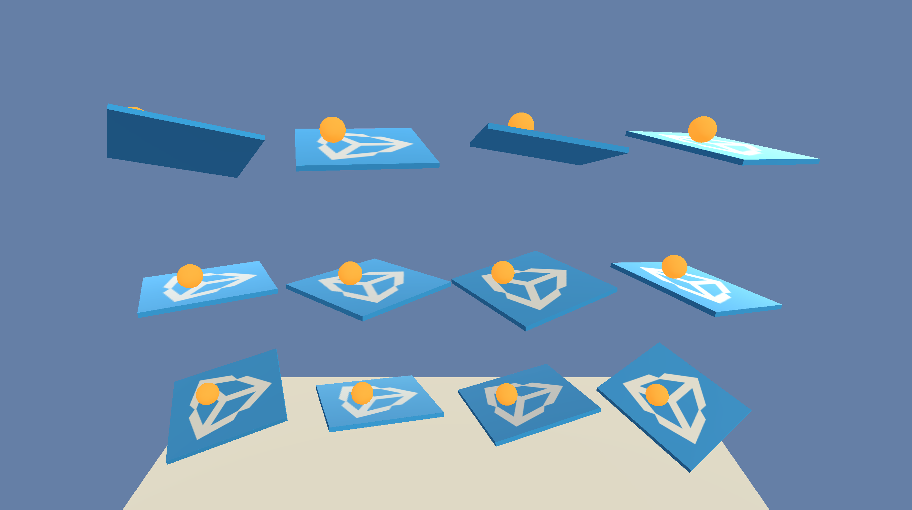
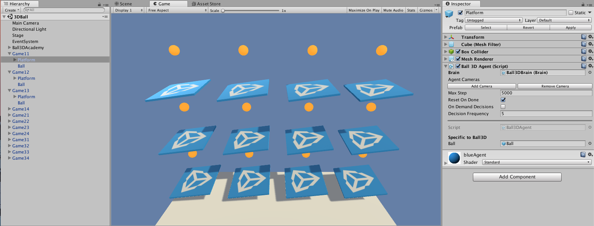
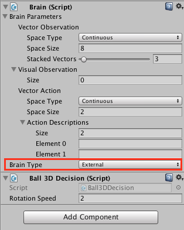

Getting Started with the 3D Balance Ball Environment
This tutorial walks through the end-to-end process of opening an ML-Agents example environment in Unity, building the Unity executable, training an agent in it, and finally embedding the trained model into the Unity environment.
ML-Agents includes a number of example environments which you can examine to help understand the different ways in which ML-Agents can be used. These environments can also serve as templates for new environments or as ways to test new ML algorithms. After reading this tutorial, you should be able to explore and build the example environments.

This walk-through uses the 3D Balance Ball environment. 3D Balance Ball contains a number of platforms and balls (which are all copies of each other). Each platform tries to keep its ball from falling by rotating either horizontally or vertically. In this environment, a platform is an agent that receives a reward for every step that it balances the ball. An agent is also penalized with a negative reward for dropping the ball. The goal of the training process is to have the platforms learn to never drop the ball.
Let's get started!
Installation
In order to install and set up ML-Agents, the Python dependencies and Unity, see the installation instructions.
Understanding a Unity Environment (3D Balance Ball)
An agent is an autonomous actor that observes and interacts with an environment. In the context of Unity, an environment is a scene containing an Academy and one or more Brain and Agent objects, and, of course, the other entities that an agent interacts with.

Note: In Unity, the base object of everything in a scene is the GameObject. The GameObject is essentially a container for everything else, including behaviors, graphics, physics, etc. To see the components that make up a GameObject, select the GameObject in the Scene window, and open the Inspector window. The Inspector shows every component on a GameObject.
The first thing you may notice after opening the 3D Balance Ball scene is that it contains not one, but several platforms. Each platform in the scene is an independent agent, but they all share the same brain. 3D Balance Ball does this to speed up training since all twelve agents contribute to training in parallel.
Academy
The Academy object for the scene is placed on the Ball3DAcademy GameObject.
When you look at an Academy component in the inspector, you can see several
properties that control how the environment works. For example, the
Training and Inference Configuration properties set the graphics and
timescale properties for the Unity application. The Academy uses the
Training Configuration during training and the Inference Configuration
when not training. (Inference means that the agent is using a trained model
or heuristics or direct control — in other words, whenever not training.)
Typically, you set low graphics quality and a high time scale for the
Training configuration and a high graphics quality and the timescale to
1.0 for the Inference Configuration .
Note: if you want to observe the environment during training, you can adjust the Inference Configuration settings to use a larger window and a timescale closer to 1:1. Be sure to set these parameters back when training in earnest; otherwise, training can take a very long time.
Another aspect of an environment to look at is the Academy implementation. Since the base Academy class is abstract, you must always define a subclass. There are three functions you can implement, though they are all optional:
- Academy.InitializeAcademy() — Called once when the environment is launched.
- Academy.AcademyStep() — Called at every simulation step before Agent.AgentAction() (and after the agents collect their observations).
- Academy.AcademyReset() — Called when the Academy starts or restarts the simulation (including the first time).
The 3D Balance Ball environment does not use these functions — each agent resets itself when needed — but many environments do use these functions to control the environment around the agents.
Brain
The Ball3DBrain GameObject in the scene, which contains a Brain component, is a child of the Academy object. (All Brain objects in a scene must be children of the Academy.) All the agents in the 3D Balance Ball environment use the same Brain instance. A Brain doesn't store any information about an agent, it just routes the agent's collected observations to the decision making process and returns the chosen action to the agent. Thus, all agents can share the same brain, but act independently. The Brain settings tell you quite a bit about how an agent works.
The Brain Type determines how an agent makes its decisions. The External and Internal types work together — use External when training your agents; use Internal when using the trained model. The Heuristic brain allows you to hand-code the agent's logic by extending the Decision class. Finally, the Player brain lets you map keyboard commands to actions, which can be useful when testing your agents and environment. If none of these types of brains do what you need, you can implement your own CoreBrain to create your own type.
In this tutorial, you will set the Brain Type to External for training; when you embed the trained model in the Unity application, you will change the Brain Type to Internal.
Vector Observation Space
Before making a decision, an agent collects its observation about its state in the world. ML-Agents classifies vector observations into two types: Continuous and Discrete. The Continuous vector observation space collects observations in a vector of floating point numbers. The Discrete vector observation space is an index into a table of states. Most of the example environments use a continuous vector observation space.
The Brain instance used in the 3D Balance Ball example uses the Continuous
vector observation space with a State Size of 8. This means that the
feature vector containing the agent's observations contains eight elements:
the x and z components of the platform's rotation and the x, y, and z
components of the ball's relative position and velocity. (The observation
values are defined in the agent's CollectObservations() function.)
Vector Action Space
An agent is given instructions from the brain in the form of actions. Like
states, ML-Agents classifies actions into two types: the Continuous
vector action space is a vector of numbers that can vary continuously. What
each element of the vector means is defined by the agent logic (the PPO
training process just learns what values are better given particular state
observations based on the rewards received when it tries different values).
For example, an element might represent a force or torque applied to a
RigidBody in the agent. The Discrete action vector space defines its
actions as a table. A specific action given to the agent is an index into
this table.
The 3D Balance Ball example is programmed to use both types of vector action
space.
You can try training with both settings to observe whether there is a
difference. (Set the Vector Action Space Size to 4 when using the discrete
action space and 2 when using continuous.)
Agent
The Agent is the actor that observes and takes actions in the environment. In the 3D Balance Ball environment, the Agent components are placed on the twelve Platform GameObjects. The base Agent object has a few properties that affect its behavior:
- Brain — Every agent must have a Brain. The brain determines how an agent makes decisions. All the agents in the 3D Balance Ball scene share the same brain.
- Visual Observations — Defines any Camera objects used by the agent to observe its environment. 3D Balance Ball does not use camera observations.
- Max Step — Defines how many simulation steps can occur before the agent decides it is done. In 3D Balance Ball, an agent restarts after 5000 steps.
- Reset On Done — Defines whether an agent starts over when it is finished. 3D Balance Ball sets this true so that the agent restarts after reaching the Max Step count or after dropping the ball.
Perhaps the more interesting aspect of an agent is the Agent subclass implementation. When you create an agent, you must extend the base Agent class. The Ball3DAgent subclass defines the following methods:
- Agent.AgentReset() — Called when the Agent resets, including at the beginning of a session. The Ball3DAgent class uses the reset function to reset the platform and ball. The function randomizes the reset values so that the training generalizes to more than a specific starting position and platform attitude.
- Agent.CollectObservations() — Called every simulation step. Responsible for
collecting the agent's observations of the environment. Since the Brain
instance assigned to the agent is set to the continuous vector observation
space with a state size of 8, the
CollectObservations()must callAddVectorObs8 times. - Agent.AgentAction() — Called every simulation step. Receives the action chosen
by the brain. The Ball3DAgent example handles both the continuous and the
discrete action space types. There isn't actually much difference between the
two state types in this environment — both vector action spaces result in a
small change in platform rotation at each step. The
AgentAction()function assigns a reward to the agent; in this example, an agent receives a small positive reward for each step it keeps the ball on the platform and a larger, negative reward for dropping the ball. An agent is also marked as done when it drops the ball so that it will reset with a new ball for the next simulation step.
Building the Environment
The first step is to open the Unity scene containing the 3D Balance Ball environment:
- Launch Unity.
- On the Projects dialog, choose the Open option at the top of the window.
- Using the file dialog that opens, locate the
unity-environmentfolder within the ML-Agents project and click Open. - In the
Projectwindow, navigate to the folderAssets/ML-Agents/Examples/3DBall/. - Double-click the
Scenefile to load the scene containing the Balance Ball environment.

Since we are going to build this environment to conduct training, we need to set the brain used by the agents to External. This allows the agents to communicate with the external training process when making their decisions.
- In the Scene window, click the triangle icon next to the Ball3DAcademy object.
- Select its child object
Ball3DBrain. - In the Inspector window, set Brain Type to
External.

Next, we want the set up scene to play correctly when the training process launches our environment executable. This means:
- The environment application runs in the background
- No dialogs require interaction
- The correct scene loads automatically
- Open Player Settings (menu: Edit > Project Settings > Player).
- Under Resolution and Presentation:
- Ensure that Run in Background is Checked.
- Ensure that Display Resolution Dialog is set to Disabled.
- Open the Build Settings window (menu:File > Build Settings).
- Choose your target platform.
- (optional) Select “Development Build” to log debug messages.
- If any scenes are shown in the Scenes in Build list, make sure that the 3DBall Scene is the only one checked. (If the list is empty, than only the current scene is included in the build).
- Click Build:
a. In the File dialog, navigate to the
pythonfolder in your ML-Agents directory. b. Assign a file name and click Save.

Training the Brain with Reinforcement Learning
Now that we have a Unity executable containing the simulation environment, we
can perform the training. To first ensure that your environment and the Python
API work as expected, you can use the python/Basics
Jupyter notebook.
This notebook contains a simple walkthrough of the functionality of the API.
Within Basics, be sure to set env_name to the name of the environment file
you built earlier.
Training with PPO
In order to train an agent to correctly balance the ball, we will use a Reinforcement Learning algorithm called Proximal Policy Optimization (PPO). This is a method that has been shown to be safe, efficient, and more general purpose than many other RL algorithms, as such we have chosen it as the example algorithm for use with ML-Agents. For more information on PPO, OpenAI has a recent blog post explaining it.
To train the agents within the Ball Balance environment, we will be using the python
package. We have provided a convenient Python wrapper script called learn.py which accepts arguments used to configure both training and inference phases.
We will pass to this script the path of the environment executable that we just built. (Optionally) We can
use run_id to identify the experiment and create a folder where the model and summary statistics are stored. When
using TensorBoard to observe the training statistics, it helps to set this to a sequential value
for each training run. In other words, "BalanceBall1" for the first run,
"BalanceBall2" or the second, and so on. If you don't, the summaries for
every training run are saved to the same directory and will all be included
on the same graph.
To summarize, go to your command line, enter the ml-agents directory and type:
python3 python/learn.py <env_file_path> --run-id=<run-identifier> --train
Note: If you're using Anaconda, don't forget to activate the ml-agents environment first.
The --train flag tells ML-Agents to run in training mode. env_file_path should be the path to the Unity executable that was just created.
Observing Training Progress
Once you start training using learn.py in the way described in the previous section, the ml-agents folder will
contain a summaries directory. In order to observe the training process
in more detail, you can use TensorBoard. From the command line run:
tensorboard --logdir=summaries
Then navigate to localhost:6006.
From TensorBoard, you will see the summary statistics:
- Lesson - only interesting when performing curriculum training. This is not used in the 3D Balance Ball environment.
- Cumulative Reward - The mean cumulative episode reward over all agents. Should increase during a successful training session.
- Entropy - How random the decisions of the model are. Should slowly decrease
during a successful training process. If it decreases too quickly, the
betahyperparameter should be increased. - Episode Length - The mean length of each episode in the environment for all agents.
- Learning Rate - How large a step the training algorithm takes as it searches for the optimal policy. Should decrease over time.
- Policy Loss - The mean loss of the policy function update. Correlates to how much the policy (process for deciding actions) is changing. The magnitude of this should decrease during a successful training session.
- Value Estimate - The mean value estimate for all states visited by the agent. Should increase during a successful training session.
- Value Loss - The mean loss of the value function update. Correlates to how well the model is able to predict the value of each state. This should decrease during a successful training session.

Embedding the Trained Brain into the Unity Environment (Experimental)
Once the training process completes, and the training process saves the model
(denoted by the Saved Model message) you can add it to the Unity project and
use it with agents having an Internal brain type.
Note: Do not just close the Unity Window once the Saved Model message appears. Either wait for the training process to close the window or press Ctrl+C at the command-line prompt. If you simply close the window manually, the .bytes file containing the trained model is not exported into the ml-agents folder.
Setting up TensorFlowSharp Support
Because TensorFlowSharp support is still experimental, it is disabled by
default. In order to enable it, you must follow these steps. Please note that
the Internal Brain mode will only be available once completing these steps.
- Make sure the TensorFlowSharp plugin is in your
Assetsfolder. A Plugins folder which includes TF# can be downloaded here. Double click and import it once downloaded. You can see if this was successfully installed by checking the TensorFlow files in the Project tab underAssets->ML-Agents->Plugins->Computer - Go to
Edit->Project Settings->Player - For each of the platforms you target
(
PC, Mac and Linux Standalone,iOSorAndroid):- Go into
Other Settings. - Select
Scripting Runtime VersiontoExperimental (.NET 4.6 Equivalent) - In
Scripting Defined Symbols, add the flagENABLE_TENSORFLOW. After typing in, press Enter.
- Go into
- Go to
File->Save Project - Restart the Unity Editor.
Embedding the trained model into Unity
- The trained model is stored in
models/<run-identifier>in theml-agentsfolder. Once the training is complete, there will be a<env_name>.bytesfile in that location where<env_name>is the name of the executable used during training.- Move
<env_name>.bytesfrompython/models/ppo/intounity-environment/Assets/ML-Agents/Examples/3DBall/TFModels/.
- Move
- Open the Unity Editor, and select the
3DBallscene as described above. - Select the
Ball3DBrainobject from the Scene hierarchy. - Change the
Type of BraintoInternal. - Drag the
<env_name>.bytesfile from the Project window of the Editor to theGraph Modelplaceholder in the3DBallBraininspector window. - Press the Play button at the top of the editor.
If you followed these steps correctly, you should now see the trained model being used to control the behavior of the balance ball within the Editor itself. From here you can re-build the Unity binary, and run it standalone with your agent's new learned behavior built right in.